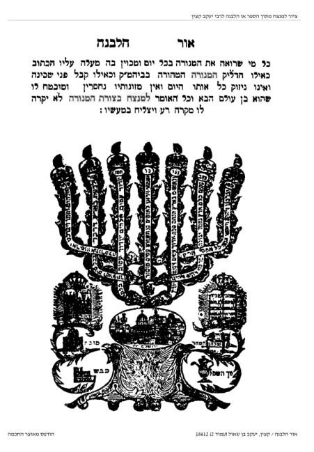
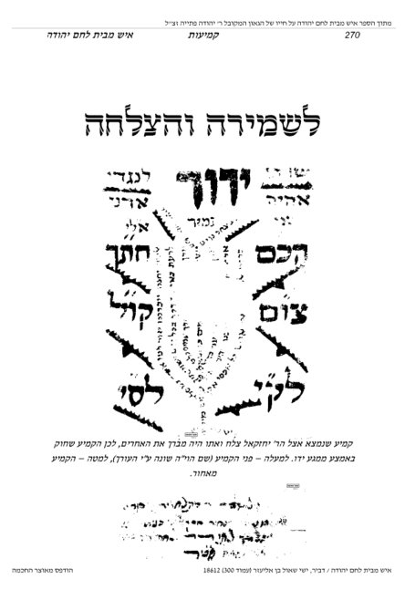
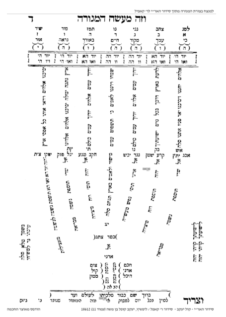
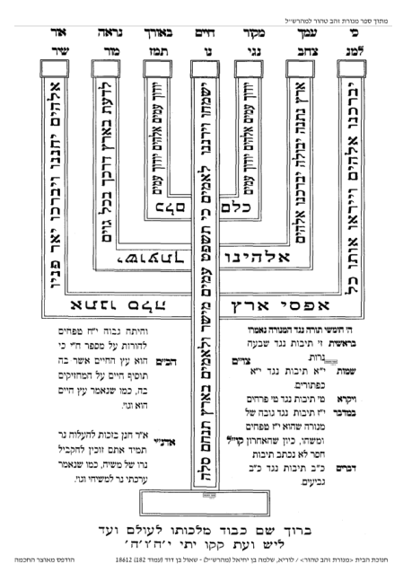
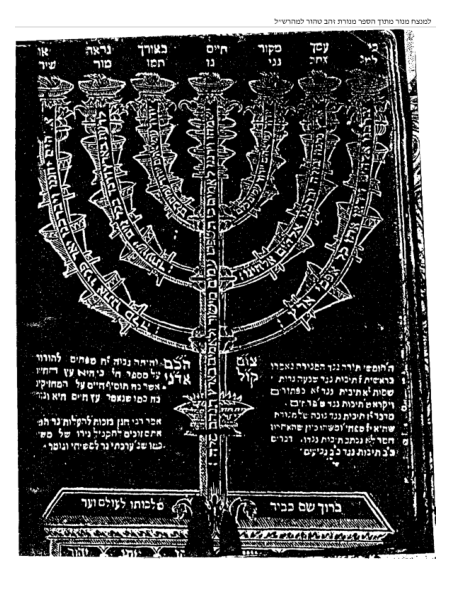
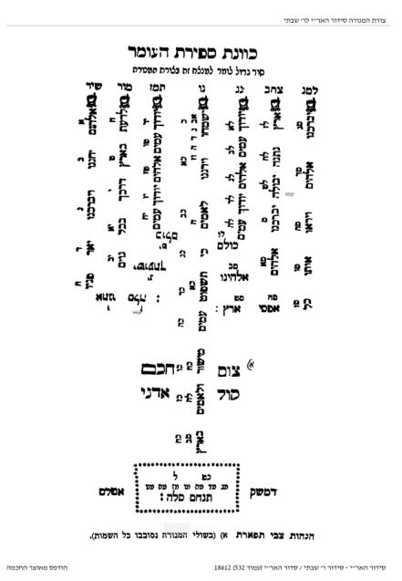
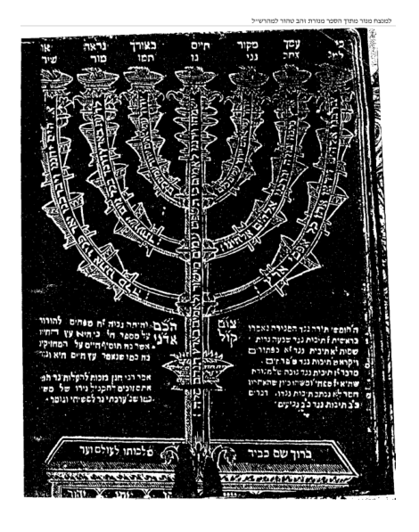
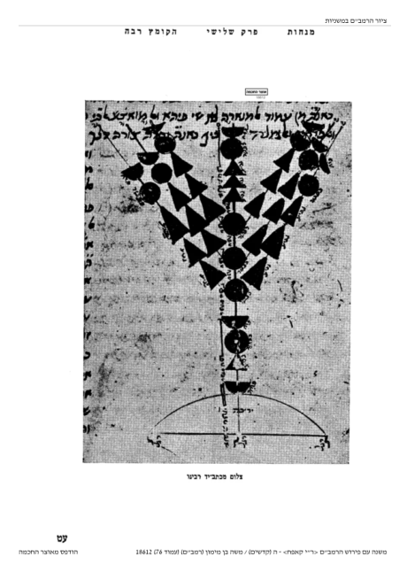

כתיבת למנצח בציור המנורה








כתיבת למנצח בציור המנורה
מהי מעלת קריאת למנצח בציור המנורה?
[1]כתבו רבותינו ז"ל שיש בקריאת מזמור למנצח בנגינות (תהילים, פרק סז),
בצורת המנורה מעלה גדולה וסגולות רבות,
ואצל דוד המלך ע"ה, מזמור זה היה מצוייר במגן המלחמה שלו,
וכך בעת יציאתו למלחמה היה מנצח, ואויביו נופלים לפניו.
ואמרו חכמי הקבלה!
כל מי שיראה מזמור זה כל יום מצוייר בצורת המנורה,
ימצא חן ושכל בעיני אלהים ואדם.
ובזה המזמור תמצא שבעה ענינים כנגד שבעת הקנים שיש במנורה,
והם: חנינא, ברכה, אור, ישועה, הודאה, שמחה, רננה,
שכל אלו הברכות עתידות להיות לישראל.
והוסיף רבינו הבן איש חי! (בן איש חי, ש"ר ויגש ד):
אם אין לפניו מזמור זה בציור המנורה,
יצייר בשכלו שקורא המזמור בציור המנורה!
עוד כתבו בספרים הקדושים:
שכל האומר אותו שבעה פעמים, וקורא אותו בכוונה,
ילך בדרכו לשלום ולהצלחה [וראה עוד בהערות למטה, בהרחבה ובמקורות].
כתיבתו על קלף
מקור לכתיבת מזמור למנצח על קלף, מצאנו להרב חיד"א בספר ציפורן שמיר (סימן ב, אות יח).
וכן בבן איש חי בספר עוד יוסף חי (הלכות, פרשת ויגש, אות ג).
מדוע למנצח מצוייר דוקא בצורת מנורה?
[2]הדלקת הנרות במשכן עדות היא לעולם שהשכינה שורה בעם ישראל,
וזהו תפקידה של המנורה,
אך לצורך זה נדרשת ההכנה מצידנו של "זה הדבר אשר צוה ה' תעשו",
שיטהרו ישראל את ליבם שיהא ראוי להשראת שכינה.
עם גמר הקרבת הקרבנות המתין וציפה אהרון…
להשראת השכינה והתפלל על כך שיכינו ישראל ליבם ותשכון השכינה בתוכם.
תוכן הפרק הזה המכונה מזמור המנורה,
הוא אמירה חשובה שהקב"ה משרה שכינתו על עם ישראל כדי שילמדו ממנו וילכו בדרכיו,
ובכדי לקדש שם שמיים בעיני העמים,
כשעיקר קידוש ה' לעיני העמים והלאומים יהיה ש'יראו אותו כל אפסי ארץ',
כי ה' עשה את הכל כדי שיראו מלפניו,
ויראה נשגבה זו היא היסוד של השראת השכינה במקדש ובתוך עם ישראל.
לכן כותבים את המזמור בצורת מנורה דווקא כי לשניהם אותה מטרה,
והיא: תפילה להשי"ת במילים פשוטות: 'מלך מלכי המלכים! אנו הכנו את ליבנו,
עכשיו ריבונו של עולם בבקשה ממך, שערי שמיים פתח!
השרה שכינתך עלינו, ויראו ממך כל גויי הארץ',
אכי"ר בעגלא ובזמן קריב.
קני המנורה
בעניין צורת כתיבת מזמור זה מצינו מספר אופנים בציור קני המנורה:
[3]אלכסון, [4]ועגול [ראה בהרחבה בהערות].
אפשרויות אלו שורשם נעוץ בדיון מסועף וקדום,
היאך הייתה צורת המנורה בבית המקדש.
ישנם צורות נוספות שעושים הסופרים לנוי [5]כמרובע וכדומה.
פסוקי המנורה מימין לשמאל או משמאל לימין
אופן כתיבת למנצח הנהוג ביננו,
מקובל לציירו כשפסוקי המזמור מתחילים בקנה מצד שמאל אלהים יחננו וכו',
ומשם הלאה לצד ימין [[6]עיין הערה].
בנגינת או בנגינות \ חסר וא"ו או מלא.
[7]ברוב הספרים העמידו אותיות 'נו' של המילה 'בנגינות' על הקנה האמצעי,
אולם על פי המסורת [8]שבידינו תיבת 'בנגינת' נכתבת חסר וא"ו.
אולם על פי קבלה כיון שכוונות גדולות נכתבו בעניין זה כך נהגו.
אך יש שכתבו בקנה האמצעי אות 'נ' בלבד. וכל אחד יעשה כמנהגו.
מה השם שלה, מנורה או חנוכייה???
מקובל לומר למנצח בציור המנורה,
בחנוכה אומרים חנוכייה, מה ההבדל בינהם?
ומה נכון יותר להגיד מבין השניים, מנורה או חנוכייה?
הסברא נותנת שהשם חנוכייה הגיע אחרי נס חנוכה,
אולם אפילו לנרות המודלקים בכלי שלהם בחנוכה,
בספרים קדמונים [9]לא מצינו שקראו חנוכייה.
בתורה ובתלמוד, בספרי קדמונים והמקורות איננו מוצאים את השם 'חנוכייה',
רק 'מנורה', מנורת החנוכה', 'מנורה' וכפי הנראה 'חנוכייה' הוא ביטוי מאוחר.
וראיתי ביאור נפלא שמנורת המקדש הייתה של 7 קנים,
והחנוכייה היא של [10]שמונה קנים, ומכאן מגיע תוספת השם 'חנוכייה'.
אולם בפרק למנצח בנגינות המצוייר בצורת המנורה שבמקדש,
המנורה שם בעלת שבעה קנים, ולכן נקראת בצורת 'המנורה'.
[1] הובא בספרים קדמונים בשם הרוקח בספרו 'יראת אל' (כת"י),
והמהרש"ל כתב בעניין מזמור זה, קונטרס הנקרא בשם 'מנורת זהב טהור',
ובתחילתו כתב: מזמור זה עם המנורה רומז לעניינים גדולים ויש בו סגולות רבות,
והיה דוד המלך ע"ה נושא זה המזמור, כתוב ומצוייר במגינו בצורת מנורה,
וכשהיה יוצא למלחמה היה מנצח ונופלים לפניו אויביו.
ואמרו חכמים בעלי הקבלה כל מי שיראה זה המזמור כל יום מצוייר בצורת מנורה,
ימצא חן ושכל טוב בעיני אלהים ואדם,
ואם הוא מצוייר על ארון הקודש יגן בעד גזירה רעה לקהל.
ואמרו חכמים בעלי הקבלה שהקב"ה הראה לדוד ע"ה ברוח הקודש המזמור כתוב באותיות של זהב מופז, עשוי בצורת מנורה.
וכן הראה אותו למשה ע"ה כדכתוב כמראה אשר הראה ה' את משה כן עשה את המנורה.
ואמרו חכמים ז"ל כל מי שמתפלל אותו המזמור במנורה בכל יום בהנץ החמה לא יקרה לו שום גזירה רעה,
ויהיה חשוב לפני בורא עולם יתברך הקב"ה כאלו הוא מדליק נרות בבית המקדש, ויהיה מובטח שהוא בן עולם הבא.
וכל האומר אותו אחר ברכת כהנים בבוקר, בשבעה שבועות של ימי הספירה, לא יקרה לו שום נזק בכל השנה כולה, ויהיה מצליח במעשיו.
ובזה המזמור תמצא שבעה ענינים נגד שבעה הקנים שיש במנורה,
והם: חנינא, ברכה, אור, ישועה, הודאה, שמחה, רננה, שכל אלו הענינים עתידים להיות לישראל.
וכמו כן כל הקורא אותם בכוונה שיכוין בו, וכל האומר אותו שבעה פעמים ילך לשלום ולהצלחה.
והמשיך שם בקונטרס לבאר כל סודות המזמור, ע"ש.
כך כתב גם רבי דוד אבודרהם (פירוש התפילה, למנצח): מקצת מקומות אומרים אותו בכל יום,
מפני שנקרא מזמור המנורה' והקורא אותו בכל יום נחשב לו כאילו מדליק המנורה הטהורה בבית המקדש וכאילו מקבל פני שכינה.
כי תמצא בו ז' פסוקים כנגר שבעה קני המנורה,
וגם יש בו מ"ט תיבות כנגד מנין הגביעים והכפתורים והפרחים והנרות שבשבעה קני המנורה שעולים למנין מ"ט,
כיצד: גביעים 22, פרחים 9, כפתורים 11, גרות שבעה סך הכל מ"ט.
ופסוק ראשון יש בו ארבע תיבות כנגד מלקחיה ומחתותיה, מלקחיה שתיים, ומחתותיה שתיים.
ובציפורן שמיר להרב חיד"א (סימן ב, אות יח) וז"ל: מה מאד הפליגו באמירת למנצח בנגינות בציור מנורה,
וכתבו ז"ל ששכרו רב ועצום,
וראיתי קונטרס בכתב יד (כונתו לקונטרס זהב טהור למהרש"ל שהבאנו לעיל, וכמו שכתב בספרו מדבר קדמות, מערכת דלי"ת אות כב) לראשונים בזה,
בסודותיו ותועלותיו, ולפחות לעשות נחת רוח ליוצרינו נאמר אותו בכונה בציור מנורה כתוב על קלף.
ובספר שבט מוסר (פל"א) לרבי אליהו הכהן זצ"ל: כל האומר מזמור "למנצח כנגינות מזמור שיר" (תהלים סז),
בצורת המנורה בכל יום בהנץ החמה, לא יקרה לו שום מקרה רע,
וחשוב לפני הקדוש ברוך הוא כאלו הוא מדליק נרות בבית המקדש.
ובספר 'מנורת המאור' כתוב לאמרו בימי העומר כששליח ציבור אומר ברכת הכהנים,
יאמר היחיד למנצח בנגינות מזמור שיר עד אפסי ארץ ויצליח במעשיו.
ויסתכל בצורת המנורה, ולא יהיה ניזוק כל היום.
ומסיים שם: וטוב לאמרו אפילו כל ימות השנה, ע"כ לשון המנורת המאור.
וכל האומרו שבע פעמים בדרך ויכון בו, ילך לשלום ולהצלחה.
וטוב שכל אדם יסתכל בו קודם צאתו לדרך, ובדרך יתפלל אותו כאמור, עכ"ל הרב שבט מוסר.
ורבינו יוסף חיים זצוק"ל בספרו עוד יוסף חי (הלכות, פרשת ויגש אות ג) הוסיף:
כשאומר למנצח מזמור שיר המצוייר בצורת מנורה על קלף,
יזקוף את הציור של המנורה שמסתכל בו,
כדי שיהיה הציור זקוף לפניו כדמיון המנורה שהייתה זקופה ועומדת בהיכל,
ולא יניח הציור מושכב ושטוח לפניו, עכ"ל.
ובשערי תשובה (סי' א אות ג) גם הוזכר מנהג כתיבת המנורה על קלף, וראה עוד מש"כ שם לגבי מנהג זה, ואכמ"ל.
ומצאתי באגרות הרמ"ז (סי' ט) לאמרו בצורת המנורה קודם ברוך שאמר.
ובבן איש חי (ש"ר, ויגש ד) כתב שטוב לומר מזמור אלהים יחננו ויברכנו בצורת המנורה,
ואם אין הציור מונח לפניו, בציור השכל סגי.
[2] שבת (כב:). ביאור הזה לסיבת הכתיבה בצורת המנורה, הוא משו"ת בניין אב (ח"ו סי' ב).
[3] רש"י (פרשת תרומה,כה לב) על הפסוק 'וששה קנים יוצאים מצדיה',
כתב בזה הלשון: יוצאים מצדיה לכאן ולכאן באלכסון,
נמשכים ועולים עד כנגד גובהה של מנורה שהוא קנה האמצעי, עכ"ל.
הרי שדעת רש"י שהמנורה הייתה באלכסון,
ושמעתי באומרים לי שגם אלכסון חשיב עיגול,
מ"מ פשטות לשון רש"י אינו מורה כן.
הרמב"ם בפירוש המשניות [מנחות ג, ז מהדורת קאפח. וכן הוא ברמב"ם הל' בית הבחירה פ"ג ה"י מהדורת פרנקל] כותב:
ראיתי לצייר כאן ציור המנורה וכו'.
והציור המובא בכתב ידו הוא כשקני המנורה באלכסון [משום מה במהדורת זכר חנוך הציור מופיע שונה והקנים עגולים],
ויש ראיתי עוד נוסחי רמב"ם שצוירה שם המנורה בעגול, אך כבר כתב על זה בנו של הרמב"ם,
רבי אברהם (בפירושו על התורה שמות כה, לב), וז"ל:
'הקנים הם כמו ענפים נמשכים מגופה של מנורה לצד ראשה ביושר, כמו שצייר אותה אבא מרי ז"ל,
לא בעיגול כמו שצייר אותה זולתו'.
הרי שהעיד רבינו אברהם בנו של הרמב"ם, כי הציור שהשתרבב בדפוסים שהקנים בעיגול בטעות יסודו!
ולא צייר הרמב"ם את קני המנורה אלא באלכסון, ואת תמונת הקנים בעיגול צייר זולתו ולא הרמב"ם!.
ובליקוטי שיחות (להרבי מחב"ד, חכ"א תרומה ג, עמ' 164) האריך בזה לאורך ולרוחב,
להוכיח שצורת המנורה כציור הרמב"ם שלפנינו כשהקנים באלכסון.
וכן נוהגים חסידי חב"ד בכל החנוכיות שלהם בקנים אלכסוניים.
וכן הכריע בפשטות מרן שר התורה הגר"ח קנייבסקי (בפירוש ברייתא דמלאכת המשכן שלו עמ' כח הערה בסוף העמוד] בזה"ל:
'בכל הציורים מצוייר קני מנורה עגולים, וכנראה שהוא טעות,
שרש"י בחומש כתב שהיו באלכסון, ושמעתי שכבר העירו בזה'.
ובמקום אחר (דרך חכמה, הל' בית הבחירה ה"י, ס"ק מב) נמי כתב כן בפשיטות:
'הקנים היו באלכסון ולא בעיגול',
ובציון ההלכה (ס"ק לח) ציין שהוא עפ"י רש"י, ציור הרמב"ם, ר"א בן הרמב"ם, ושכ"כ הריב"ש (תשובה תי) דלא כהמציירים בעיגול.
[4] יש שרצו לדייק ממדרש הגדול שהקנים יצאו בצורת עיגול (בהעלותך ח) כיון שכתב:
ומניין שהיו חוזרים חלילה כמין עטרה, תלמוד לומר יאירו שבעת הנרות
[פירוש חמדת שלמה על מדרש הגדול. הר"י קאפח בהערות על ספר מאור האפילה לאחד מחכמי תימן,
עמ' רסב הערה 5, ואף הרב מאור האפילה שם כתב שהיו הקנים יוצאים ומתעקמים מעט מעט],
ולענ"ד אינו מוכרח אולם באבן עזרא (על התורה, שמות כז, כא) כתב במפורש הנרות כחצי עיגול,
וממילא יש מקור לעשיית מנורה זו בראשונים,
וכ"כ בספר מעשה חושב (פ"ז) להגאון המקובל הרב עמנואל חי ריקי,
שהקנים נמשכים בעיגול ועולין כנגד גובהה של מנורה.
ורס"ג בפירושו על התורה (שמות כה, לב) כתב: וראוי שנדע גם כן,
שששת קנים לא הותקנו כתבנית הענפים היוצאים מן העץ, שהם ענף מעל לענף ומקביל לו,
אך צורתם כצורת כף בעלת שש אצבעות, בצורת קשת, מחצית אחת מעוגלת.
אבל המחצית השנייה ריקה מהם.
כך ששה קנים מקיפים את המנורה, צד מזרחי מוקף בששה קנים, והמחצית המערבית ריקה מהם,
ופירוש זה למרות שנמסר בקבלה הריהו יוצא מן הכתוב,לפי שאמר כאן העלה נרותיה והאיר אל עבר פניה (כה, לז).
וראה עוד בקובץ אור ישראל (יו"ל במאנסי, חכ"ב, שנה ו, ב) שתמה!
היאך יתכן שכל החכמים שציירו והביאו בסידוריהם צורת מנורה או עגולה או מרובעת,
ואיך יתכן לומר שכולם לא הרגישו כי ציור זה שבידיהם אינו נכון.
ממצאים ארכיאולוגים בעקבות המנורה…
וראה בספר מנורת זהב טהור [פרק ז עמ' 42- 63 בעניין ציור מנורת הרמב"ם והממצאים הארכיאולגיים, להרב אליהו אריאל, הוצאת מכון המקדש],
ואלו תמצית דבריו: שמחד מופיע לפנינו ציור הרמב"ם,
אך מאידך ניצבות שבע מנורות עתיקות בציורים ששרדו מימי בית שני,
ובכולם ללא יוצא מן הכלל מתוארת המנורה כבעלת קנים מעוגלים.
אין להתעלם אמנם מציור הרמב"ם אך לומר שמה שנהגו במנורות עגולות בטעות יסודו הוא קשה,
כיון שסמל המנורה הופיע בכל הדורות על מטבעות רצפות תקרות וקירות בתי כנסת עתיקים,
[ראה שם תמונות מבתי כנסת עתיקים מחמת ויריחו ועוד] כלים עתיקים קברים בבתי קברות,
ציורים במהלך הגלות, וציורים במערות קבורה שהתיאור הנפוץ שבכולם היא מנורה בעלת קנים מעוגלים.
ובפרט שהרמב"ם מדגיש בפירושו למשנה בהסבר לציור שצייר,
כי אין הוא מתכוון לצייר מנורה מדויקת, ושהוא הנכון ואין בלתו,
ובנוסף לא נמצא ולו ממצא אחד מתקופת הבית המתאר את קני המנורה באלכסון.
ועוד ראה שם שהאריך להוכיח מעדויות של אישים באותה התקופה,
מהמנורה המצוירת בשער טיטוס ברומא כשגלו ישראל כשמנורה זו בעלת קנים מעוגלים,
ממצאים ארכאולוגיים ומומחים ועוד בצורה מפורטת שכך היא צורה המנורה כשהקנים עגולים.
[5] בסידור האר"י (כוונת ספירת העומר) לר' שבתי מופיע ציור למנצח בצורה מרובעת.
[6] בספר מנורת זהב טהור למהרש"ל [הוזכר לעיל] הודפס ציור המנורה משמאל לימין,
אולם בגוף הספר של מהרש"ל כתב להדיא להיפך,
וז"ל: זה המזמור עשה דוד המלך והוא עשוי בצורת מנורה,
והם שלשה פסוקים ראשונים בצד ימין, והפסוק ישמחו וירננו באמצע, ושלשה פסוקים אחרונים בצד שמאל, עכ"ל.
וראה בספר אוצר מחמדים (סי' ס) מה שכתב בשם חכם אחד ליישב הסתירה ברש"ל, וק"ל.
ובסידור החיד"א הובא ציור למנצח בכתב אשורי על קלף, בכתב ידו של החיד"א,
ושם הפסוקים מופיעים משמאל לימין. ועיין בספר אמרי חב"ר (צורת המנורה, אות ד) שהאריך בזה.
גם בסידורי האר"י מצינו סתירה בזה: בסידור האר"י לר' קאפיל (הקדמת הכותב):
מופיע ציור למנצח כשהפסוק הראשון מתחיל מימין והולך לכיוון שמאל.
אולם בסידור האר"י (כוונת ספירת העומר) לר' שבתי התחיל משמאל לימין כנהוג ביננו,
ודרך אגב אוסיף כי בסידור ר' שבתי מופיע ציור למנצח בצורה מרובעת.
וראיתי בספר אוצר מחמדים (עמ' שמז) שהעיר כי בספרי מהר"ח לא מוזכר לומר כלל למנצח בצורת מנורה.
ואף מצינו בשער הכוונות (ספירת העומר דרוש יא) שכתב מהר"ח ויטאל שהאריז"ל היה מקפיד וזהיר מאוד,
לומר אחר ספירת העומר מזמור זה, אמנם לא הזכיר רמז כל דהו שאמרו בצורת מנורה, וסיים שצריך בירור בזה.
[7] עיין בספר אמרי חב"ר מש"כ והרחיב בזה (עמ' שסה אות י').
[8] ראה מנחת שי.
[9] בגמרא שבת (כא:) בכל סיפור נס החנוכה לא מוזכרת המילה חנוכייה.
הרמב"ם (הל' חנוכה) מזכיר רק נר חנוכה, ואף את שם הפרק הוא קורא הלכות 'מגילה וחנוכה',
ולא מגילה וחנוכייה, או פורים וחנוכה, אלא מגילה וחנוכה.
בבן איש חי (ש"ר פרשת וישב, ה"ד) כתב 'מנורת החנוכה'.
[10] הלכה פסוקה היא בשלחן ערוך (סי' קמא, ס"ח):
לא יעשה אדם תבנית היכל גבהו וארכו ורחבו.
אכסדרה תבנית אולם. חצר תבנית עזרה. שלחן תבנית שלחן. מנורה תבנית מנורה,
אבל עושה של חמישה קנים או של ששה או שמונה, אבל של שבעה לא יעשה,
אפילו משאר מיני מתכות, ואפילו בלא גביעים וכפתורים ופרחים,
ואפילו אינה גבוהה שמונה עשר טפחים.
ובש"ך (ס"ק לה, לו) ביאר שאין לעשות אפילו שאר מתכות,
ואפילו בלא גביעים כיון שבדיעבד מנורה זו כשירה במקדש,
ואפילו אם אינה בגובהה המקורי, אינו מעכב וכשירה במקדש, לכן אין לעשותה.
******